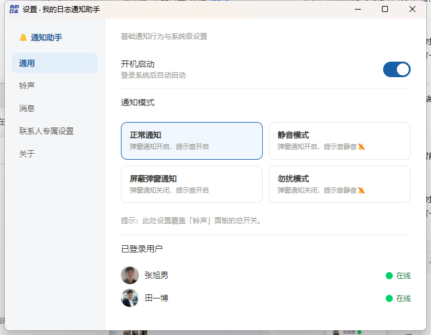
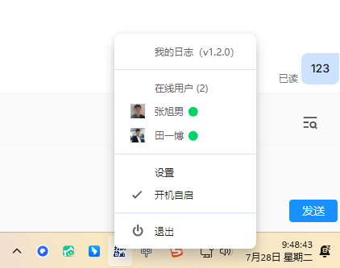
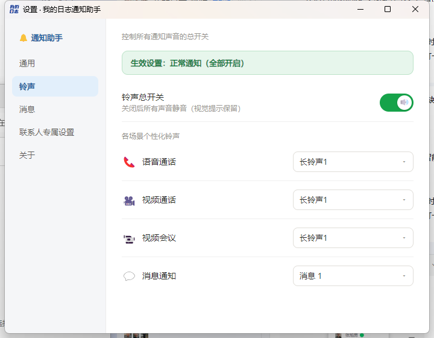
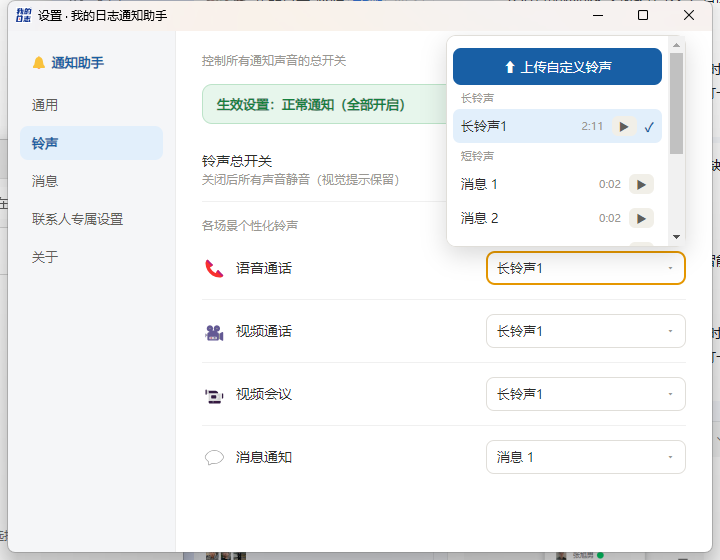
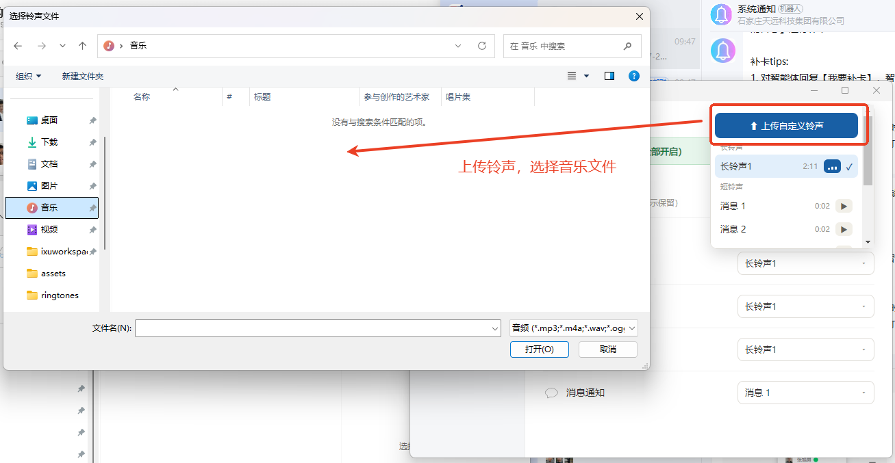
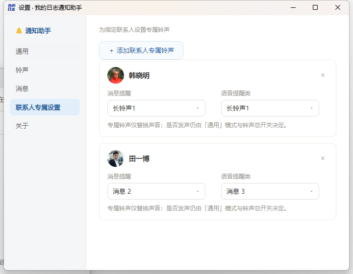
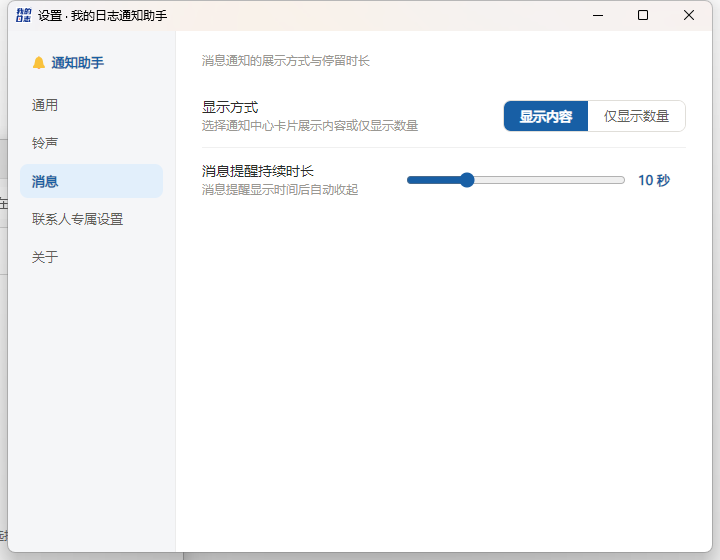
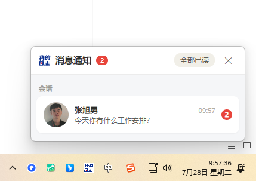
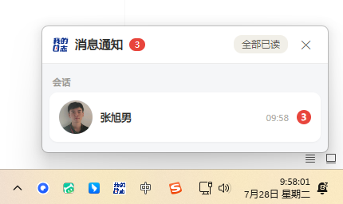
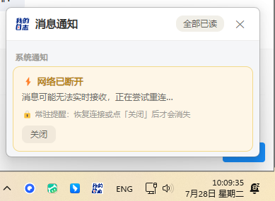

本次更新新增独立设置面板、支持按场景与联系人自定义铃声、优化消息通知 UI，并新增网页端用户离线 / 被踢下线通知。
新增独立设置窗口，左侧导航分「通用 / 铃声 / 消息 / 联系人专属设置 / 关于」。通用页可直接切换通知模式（正常 / 静音 / 屏蔽弹窗 / 勿扰），并同步显示托盘在线用户列表；左键点击托盘图标即可直接打开设置面板。


铃声面板支持按场景（语音通话 / 视频通话 / 视频会议 / 消息通知）分别设置铃声，并提供总开关。总开关与通用通知模式联动，静音或勿扰模式下自动禁用。自定义铃声上传入口已移到下拉列表顶部，选择器会自动处理窗口边界避免被裁切；联系人专属铃声仅替换声音，不影响模式控制。




消息页可设置通知卡片展示内容或仅显示数量，并调整提醒停留时长。常驻通知卡片带未读角标；点击通知时，若网页端已在线则通过 WebSocket 聚焦已有浏览器标签并标记已读，避免反复新开标签。



当网页端用户离线或被踢下线时，桌面端会弹出常驻通知（与聊天消息区分），重连上线或用户点击后可隐藏。
